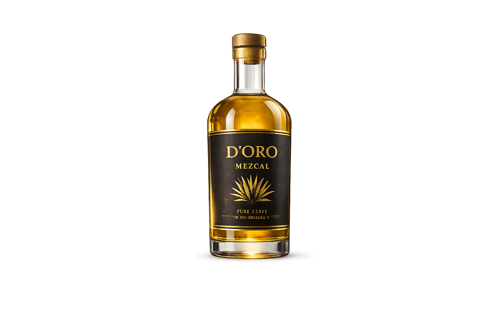
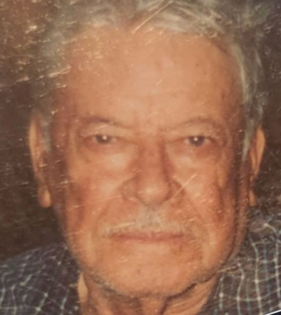

01
Harvested with purpose
Mature agave is selected for depth, structure, and balance — never rushed for convenience.
Family Land Since 1928
An authentic mezcal made on ancestral land with pure agave and no additives.


OUR STORY
D’Oro begins with a family philosophy that never needed embellishment. Agave was cultivated with intention, the land was respected, and the process remained close to the hands that understood it best.
What started generations ago still defines the bottle today: clarity over excess, patience over shortcuts, and a mezcal that speaks with honesty.
THE PROCESS
Mature agave is selected for depth, structure, and balance — never rushed for convenience.
Fermentation is allowed to develop naturally, preserving the character of the plant without masking it.
Each run is approached with precision so the final spirit remains expressive, polished, and true to its origin.
THE BOTTLE
D’Oro is made to feel refined, grounded, and intentional. Nothing unnecessary. Nothing loud. Just a bottle worthy of what it holds.
CONTACT
For partnerships, hospitality placements, distribution, or direct brand inquiries, reach out to begin the conversation.
hello@doromezcal.com